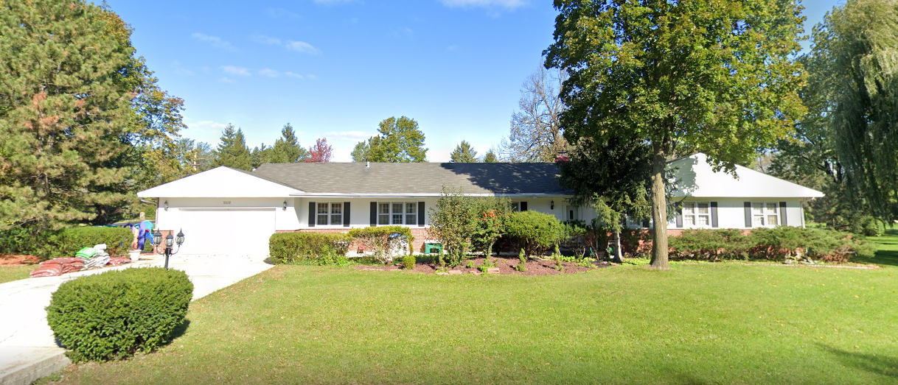

Mission
We provide a secure and safe learning environment for all children that encourages self-expression (care for self) and group responsibility (care for others); offers an area through which your children may discover and express their personal potential through exploration and experimentation. It is important for parents to feel good about bringing their children to a safe and nourishing environment. It is our privilege to assure that every child experiences these basic rights.
About Us
Asima Baig - Director
I hold a Master’s degree in social science and a Bachelor’s degree in education. I also possess an associate’s degree in Early Childhood Education from Oakton Community College. I was also recognized as a President’s Scholar each semester. In addition, I have a Preschool Certificate for children 3-5 years of age and received my state credentials for Early Childhood Education through Gateways Professional Development Program. Beyond my education, I have worked with children in the early childhood setting for more than 10 years. In addition to my daycare experience, I am the mother of three children—all of whom have succeeded outstandingly in their educational pursuits. My daughter graduated college from Yale University and graduated from medical school at Harvard University. My oldest son is a CPA, and my youngest son is a software engineer.
Testimonials
Asima, the owner of Crescent, is absolutely wonderful. When I suddenly needed a caregiver for my toddler because my mother-in-law had to travel overseas, I contacted Asima to see if she could temporarily take care of my child. She was quick to respond and exceptionally warm in her welcome. I got to visit her home the next day and was impressed by the sheer quantity of learning materials and toys. My daughter didn't want to leave! We decided to keep our child under Asima's care and are so glad for this decision. My daughter loved her experience there and we are definitely coming back when we need more childcare!
- Lola
Asima, the owner and care giver, is very respectful of our wishes as parents. She also very clearly loves the children she watches. I appreciate the cirriculum, while also maintaining a "learn from doing" mentalility (allowing kids to learn from activities outdoors, etc). Asima is flexible to our needs and circumstances, making her very easy to work with.
- Nicole
Contact Us
